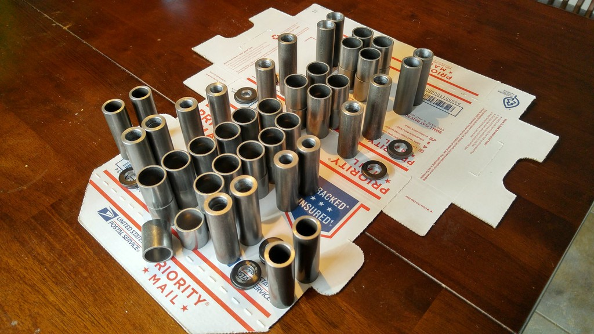
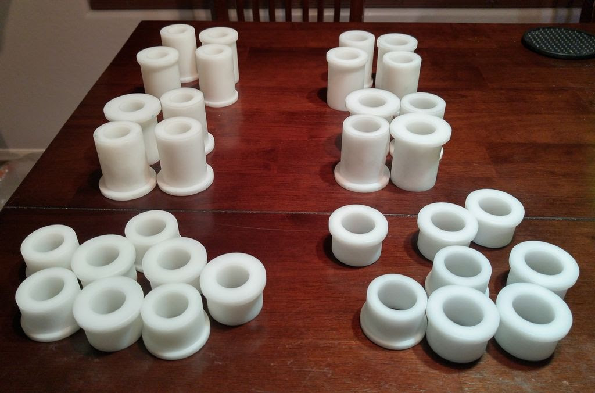

SADFab
Miata Bushing Pricing and Options
If you haven't read the Bushing Megathread, go do that first. Then come back and talk to us.
This thread will cover all of the different bushing options that SADFab offers, along with pricing for the more common ones. In general we can set you up with whatever you want, but I will list the most common packages and pricing. All prices include shipping To order email us at info@sadfab.com
The whole pricing matrix can be seen here
Polyurethane Bushing Bronze Bearing Conversion Kit

So far this is our favorite option. It is perfect for people who want better performance out of their already installed poly bushings, but don't want to go all out and run delrin everywhere. This kit will replace all the metal sleeves that come with your poly kit with higher strength sleeves and . SAE863 bearings.
It contains the following:
- Bronze bearings and sleeves for all bushing locations on the car
Note: The FUCA bushings must be drilled out, at some point we may offer an exchange program but as of now you must ship your FUCA bushings to us to have them drilled out. He will then ship them back to you with the whole retrofit kit.
Price: $330
Basic Delrin Kit

This is a bare bones delrin kit. Nothing fancy, you just want moar stiff.
It contains the following:
- Delrin Bushings for the following locations:
- FLCA Forward Bushing
- FUCA-I bushings
- RLCA-I Forward Bushing
- RLCA-O bushings
- RUCA-I bushings
- Grease fittings for all locations
Note: All delrin bushings require drilling out with a 7/8" drill after pressing into control arms.
Price: $470
*If upgrading from poly bushings you can reuse your bushings in these locations, but SADFab recommends trying to sell your poly kit all together. You will end up better off that way. Price does not include the poly bushings
The Full Enchilada
This is the kit that Sean and I run. It is delrin everywhere that works, with poly and bronze bearings in the spots you can't and a spherical in the RUCA-O location.
It contains the following:
- Delrin Bushings for the following locations:
- FLCA Forward Bushing
- FUCA-I bushings
- RLCA-I Forward Bushing
- RLCA-O bushings
- RUCA-I bushings
- Poly bushings and bronze bearings for the following locations (see Bushing Megathread for details)*:
- FLCA Aft bushing
- RLCA Aft bushing
- RUCA-O spherical conversion kit
- Grease fittings for all locations
Note: All delrin bushings require drilling out with a 7/8" drill after pressing into control arms.
*If upgrading from poly bushings you can reuse your bushings in these locations, but SADFab recommends trying to sell your poly kit all together. You will end up better off that way. Price includes the poly bushings
Price: $665
The NASA Full Enchilada
This is the same as the Full Enchilada, but uses a poly bushing and bronze bearing in the RUCA-O because of the NASA small bore rules about metal bearings.
It contains the following:
- Delrin Bushings for the following locations:
- FLCA Forward Bushing
- FUCA-I bushings
- RLCA-I Forward Bushing
- RLCA-O bushings
- RUCA-I bushings
- Poly bushings and bronze bearings for the following locations (see Bushing Megathread for details)*:
- FLCA Aft bushing
- RLCA Aft bushing
- RUCA-O bushing
- Grease fittings for all locations
Note: All delrin bushings require drilling out with a 7/8" drill after pressing into control arms.
*If upgrading from poly bushings you can reuse your bushings in these locations, but SADFab recommends trying to sell your poly kit all together. You will end up better off that way. Price includes the poly bushings
Price: $635
The "Because Racecar"
This is the all out, nothing wasted, perfect bushing setup. Sphericals everywhere they are needed, and delrin everywhere else. This is still in development, so pricing will be announced later, but if you are interested in it contact us.
It contains the following:
- Delrin Bushings for the following locations:
- FUCA-I bushings
- RLCA-O bushings
- RUCA-I bushings
- Spherical conversion sleeves in the following locations:
- FLCA
- RLCA-I
- RUCA-O
- Grease fittings for all locations
Note: All delrin bushings require drilling out with a 7/8" drill after pressing into control arms.
Price: TBA
Offset Lower Control Arm Bushing
A common solution to gaining more camber in the front of a Miata is to install an offset upper bushing. While this does increase camber, it also decreases bump travel when using wider than 8" wheels. We recommend using a delrin offset bushing in the forward lower control arm position combined with a poly bushing in the aft lower control arm position.
Until now the only way to get a bushing like this was to have it custom made. Not anymore, SADFab is offering offset forward lower control arm bushings to get all the camber you want.
Price: $70
Note: All delrin bushings require drilling out with a 7/8" drill after pressing into control arms.
Notes:
-All prices include shipping, and most of our packages can be adjusted to fit your needs just shoot us an email at info@sadfab.com and we will make something work.